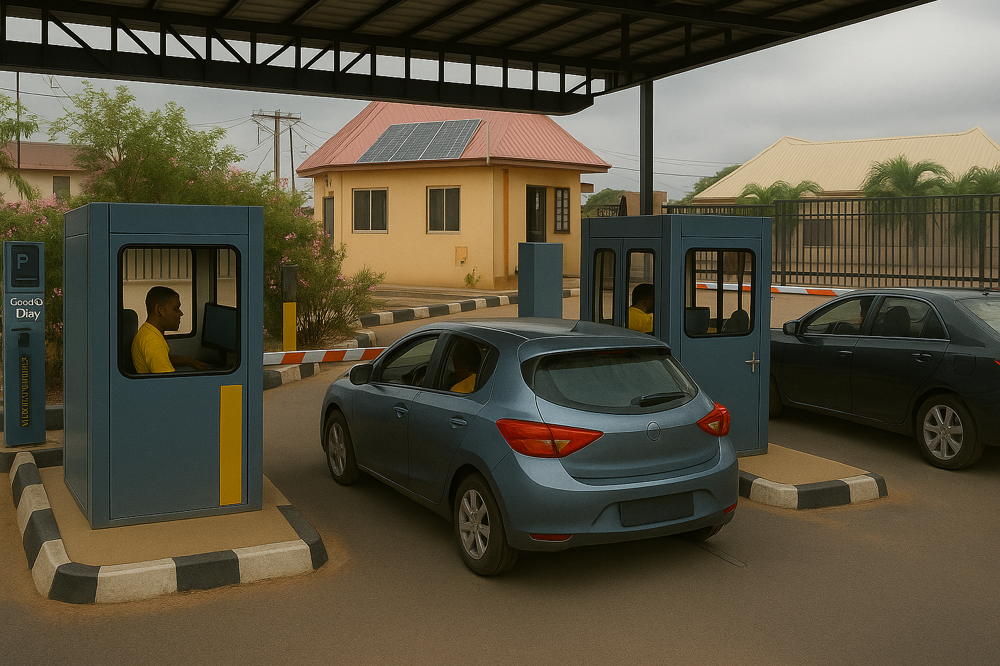

Welcome to TicketPro
A smart vehicle management software built to monitor vehicle entry and exit at entities, control gate barriers, issue digital tickets, generate reports and track operator shifts across multiple locations.
Improve transparency, reduce human error, and gain real-time insights—all in one place.

Installation & Setup
Our experienced technical team will handle the complete installation and deployment of TicketPro on your preferred server infrastructure. This includes setting up the backend environment, configuring the software, and ensuring seamless integration with your entry and exit systems.
You won’t need to worry about any technical complexities — from database configuration to barrier control and electrical setup, everything will be handled efficiently by our professionals. We’ll also ensure the system is tested, secured, and ready for operational use.
Usage Guide
Login with your credentials. Navigate using the hamburger menu. Entry and Exit officers use the respective dashboards to admit or release vehicles. Managers and Admins access broader features like announcements, settings, backups, and full reports.
Operators can print receipts, open barriers (when configured), and review daily activity logs.
User Roles
Administrator
Full control including entity creation, user transfer, and backups.
Manager
Oversees operations in a specific entity, approves shifts, views statistics and reports.
Park Officer
Handles entry/exit gates with scoped access to ticketing and monitoring only.
Key Features
- Vehicle ticket issuance and receipts
- Shift tracking and reporting
- Role-based access with entity-specific data
- Sales summaries, daily logs, and history
- Announcement system for staff
- System maintenance: delete, backup, and restore
- Supports PDF export of reports and settings
- Automatic additional fee for overstayed vehicles
Layout Plan
This 3D visual illustration shows the proposed layout for how TicketPro will operate at the entrance and exit gate, including cubicle placement,barrier positioning along with a schematic overview of system communication between gates and the admin office..
Entrance Gate Layout

- Vehicle approaches the entrance gate.
- Motorist is informed of the ticket price and makes payment.
- Ticket is generated and issued to the driver.
- TicketPro sends a signal to the barrier system.
- Boom barrier opens automatically.
- Vehicle enters the premises.
Exit Gate Layout
- Vehicle approaches the exit gate.
- Operator scans or verifies the issued Ticket.
- System confirms exit eligibility and time.
- Any pending payment is settled if applicable.
- TicketPro opens the boom barrier automatically.
- Vehicle exits the premises and system logs the exit.
System Communication Diagram

- TicketPro server is hosted in the Admin/Manager's Office.
- Entrance/Exit cubicles are connected via network (LAN or Wi-Fi).
- Admin monitors entry/exit logs and operator activities in real-time.
- Reports, access logs, and ticket data sync continuously to the server.
- Admin can remotely generate reports, update ticket prices or block access.
Download Documentation PDF
You can download the complete documentation as a PDF file for offline use.
Download PDFIf you don’t see the video, click here to view or download.
Frequently Asked Questions
Yes, it works seamlessly on any local web server like XAMPP.
Yes, you can export and restore databases directly from the system maintenance section.
Managers and Admins can update ticket pricing from the Settings page based on entity configurations.
Contact Support
Did You Know?
If just 150 cars pay ₦200 daily for parking in a business area or mall, that adds up to ₦10,950,000 in revenue every year.